Final Project
Concept
For my final project I wanted to create a series of pieces. After much thought I decided I wanted to make two sets of chess pieces. Santiago Calatrava is one of my favorite architects and his projects, Turning Torso and Chicago Spire, were the design inspirations for this project. The aim is to create a more sculptural and modern version of classic chess pieces.
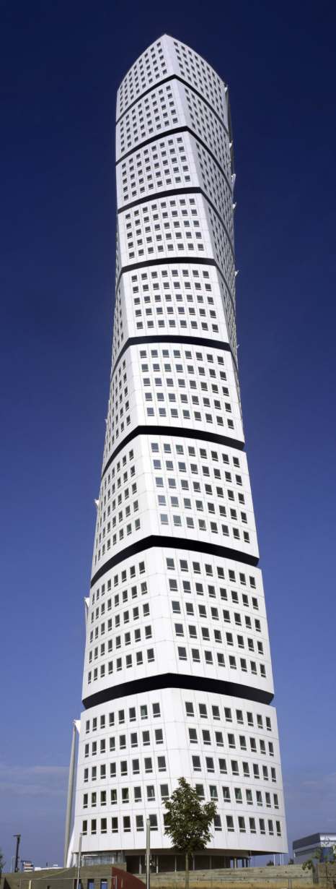
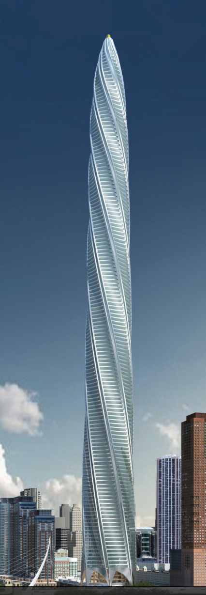
I started with some general shape ideas. I wanted to make sure the sets looked cohesive but not duplicative. Also, I wanted to make sure my shapes were a realistic size so I looked up guidelines for chess piece size and chess board size. Once I had my ideas and sizes, I started building the Grasshopper geometry.
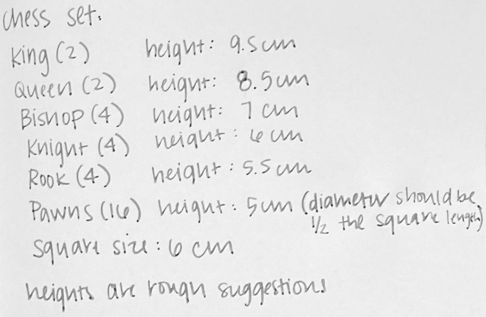
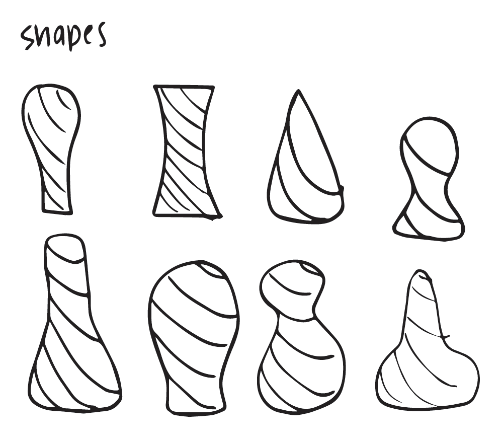
Grasshopper and Rhino
Since I am still pretty new to Grasshopper, I had to find a tutorial that would help me undestand how to build these pieces. (See below in References for a link to the video.) My plan was to start with one piece in Grasshopper, and then model the other pieces based on the same geometry. I set up number sliders for the number of sides which I decided would be 8. I also added a slider for base radius, the amount of rotation, the height, and the height spacing. Because all piece sizes were increments of .5cm, I was able to set the spacing between 10 -20 to adjust the height. I discovered that I had to add an extra .5 to every height because the first point was at 0. For the rotation, I orginially didn't have a strategy for how it was used, but then I realized my pieces weren't looking cohesive so I decided that I would change the rotation of each piece by 2 based on the weakest piece to the strongest piece in the game.
Initial Shapes and Ideas
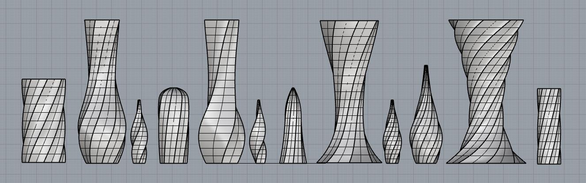
The other component that was critical to this success was the graph mapper. Because I was pretty unfamiliar with how the graph mapper worked and the types of graphs, I spent some time playing with the different graph types and figuring out which one worked best for the shapes I was trying to create. I chose the bezier graph mapper. (Below is the Grasshopper geometry for the queen piece). Once I had all pieces modeled, I transferred all pieces to one Rhino file so I could see them all together as a set. I realized the slider I had for radius was base radius and not the widest radius of the piece, so I had to do some minor adjustments to make sure the pieces were accurately scaled in reference to each other. Next, I had to use the Flip command for all of the pieces, followed by the Cap command to close the pieces and make closed polygons. Then I made a chess board to begin alignment for rendering and to also get a visual sense of size and scale for what the completed sets would look like together. After the pieces were set up for a chess set, I then divided the sets into two different layers so I could render them separately.*Note: due to the round shape of the pieces, they were all exported at 0.001mm.*
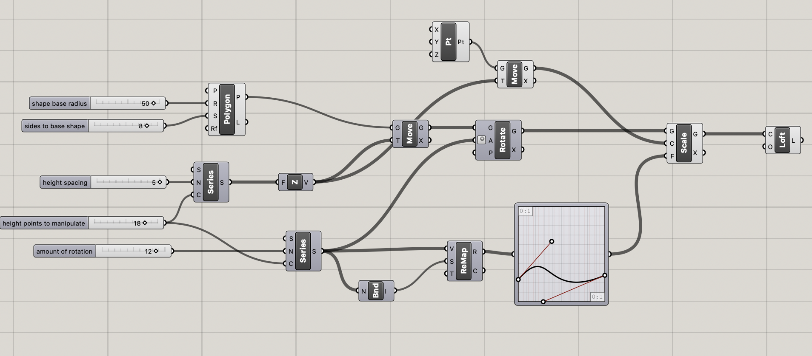
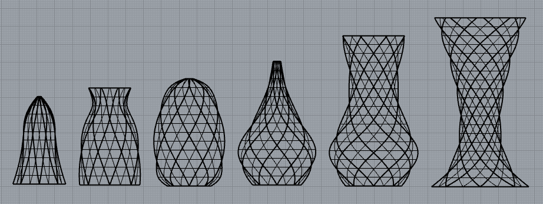
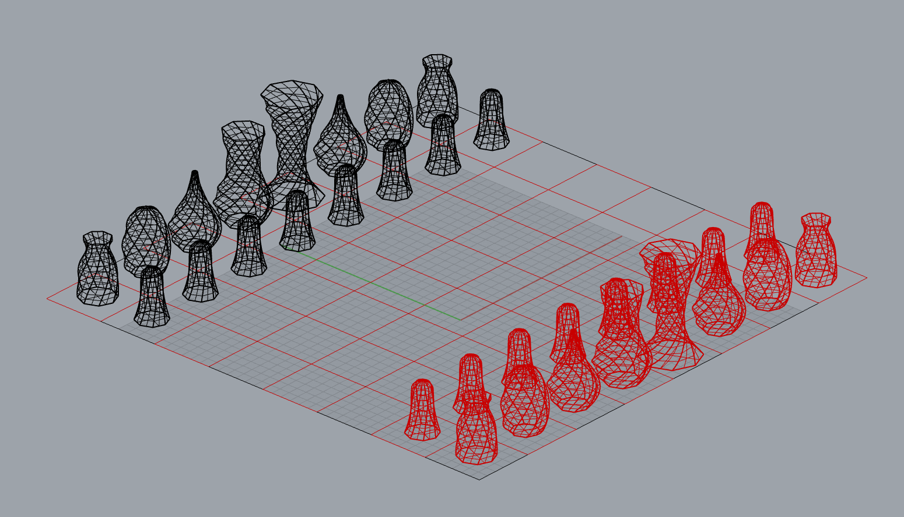
Rendering
Below is a rendering of the final design.
(Due to time and print bed constraints,
printing the chessboard was not included in my project proposal.)
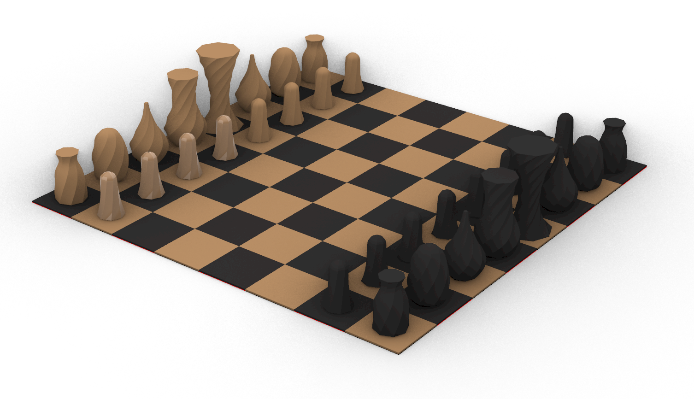

Slicing and Printing
I knew based on the unique shape of these pieces, that slicing would be critical
to the success of the prints. I used almost identical settings for each set of prints. For the pawns, I started with low quality base setting.
From there, I adjusted the infill shape to be lines because it looked to provide the most support around the edges. I also changed from a
brim to a skirt. The speed was changed from 50 to 75. Finally, I changed the travel resolution and max travel resolution from .25 to .5.
The other two sets of prints (1. two rooks, two bishops, two knights, and 2. knight and queen) followed the same settings except they both
needed support, so I added normal support everywhere for both.
Per the suggestion of Professor Peek, I sliced some of the pieces in vase mode
because it would give me an understanding of the shhapes and sizes with a much shorter print time. I printed 4 pieces in vase mode: the pawn,
rook, knight, and bishop. I did not vase mode print the queen or king because those would take about an hour and 3 hours respectively, and because
the other 4 vase prints looked good. Note: Because of how delicate the vase mode was, some of the pieces lost their base when pulled off the bed,
so the size and shapes of what the final pieces look like aren't exactly accurate to these images.
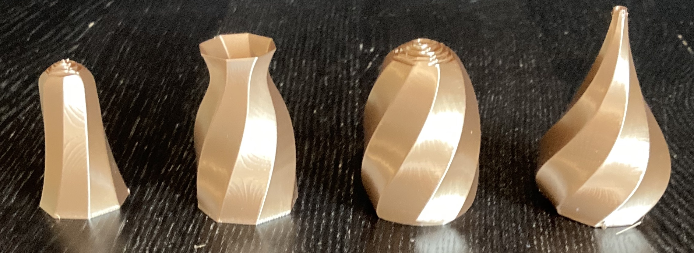
I started with the bronze set. I printed the pawns first because I felt they were the least risky and I would be able to print 8 pieces at once. The printing time took about 4 hours. Next, I moved onto the rooks, knights, and bishops. This print took about 6 hours. I found that the support strucutres helped to more easily remove the pieces from the bed, which was a plus! Lastly, I printed the king and queen which took about 7 hours. The queen printed correctly, but the king had one of it's supports fall over during the print, but luckily was still able to print. I printed the second set in the same manner as the first.
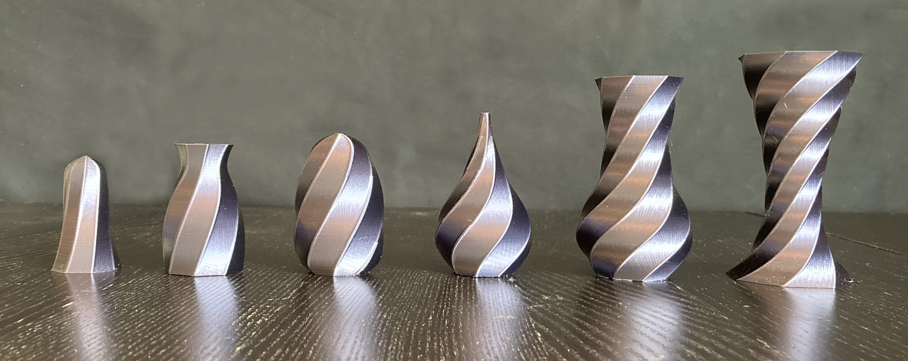
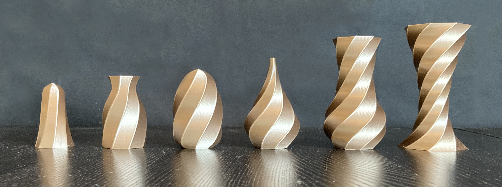
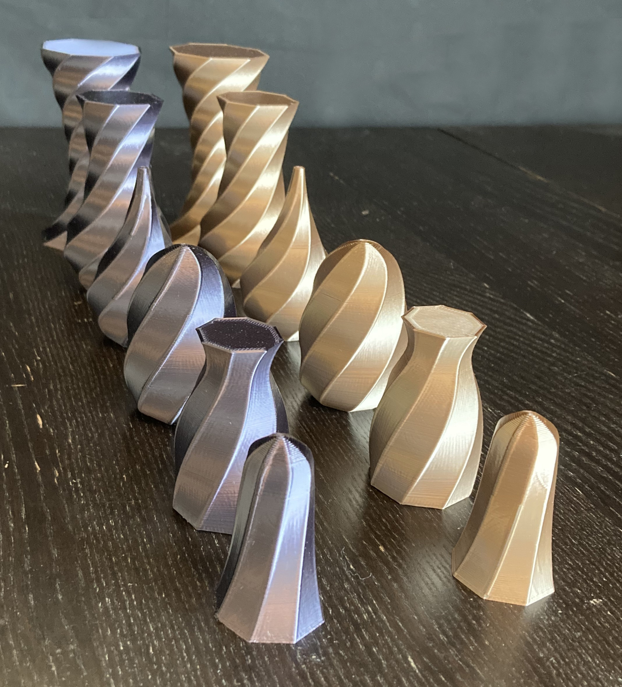
I wanted to be able to display the sets, so I created a chessboard out of cardboard and sharpie markers. I measured and designed the board to fit the pieces based on the same suggested measurements used to make the pieces. Once the board was finished I was able to line up all the pieces to bring the sets together.
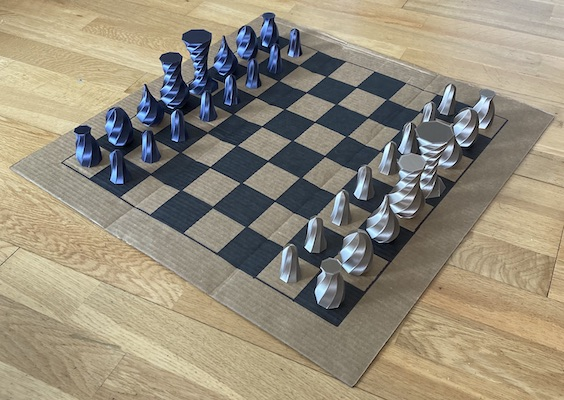
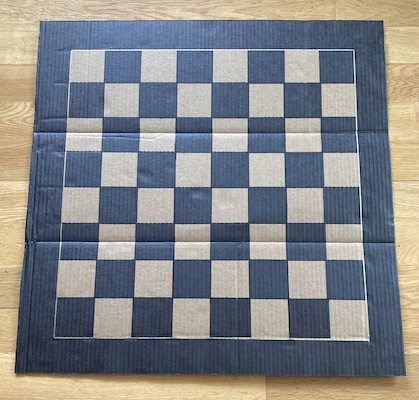

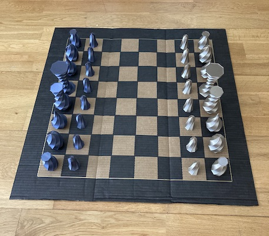
Thanks Junchao for the rendering and modeling advice!
REFERENCES
Chess Guidelines
Turning Torso
Chicago Spire
Youtube Tutorial
All Grasshopper Models
Rhino Rendering
PLA filament